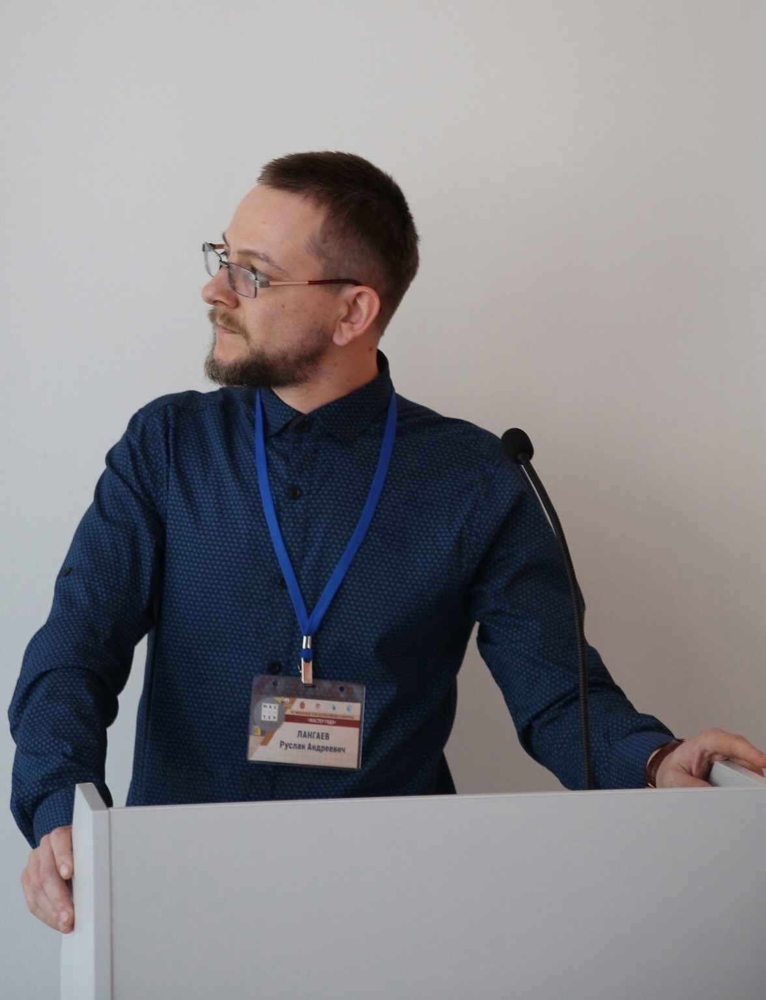
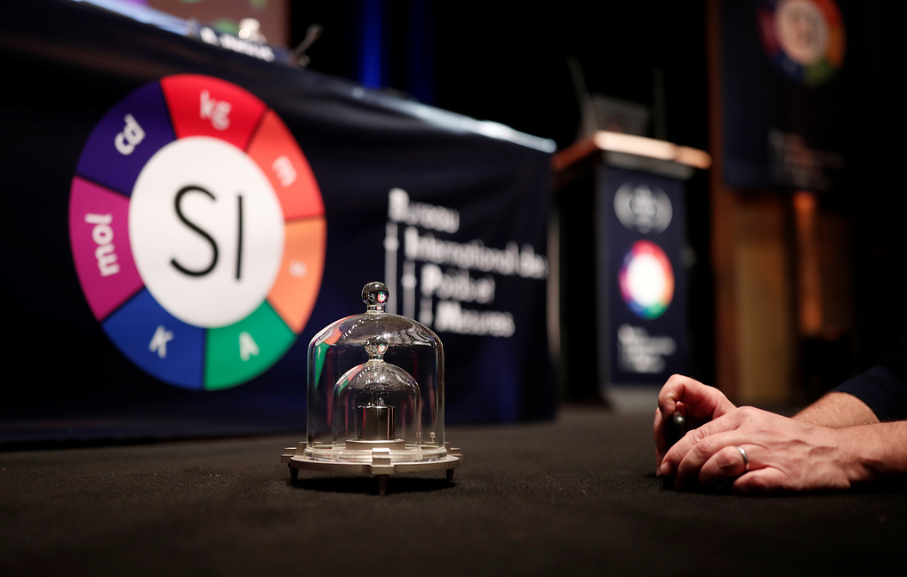

Сайт преподавателя спецдисциплин
|  |
Лангаев Руслан Андреевич |
Учебные материалы
Опорные конспекты по физике 10-11 класс
Кинематика
Законы Ньютона
Пять поколений ЭВМ
Первичные измерительные преобразователи (датчики)
Формирование здоровьесберегающей среды в техникуме как основа успешного развития профессиональных и общих компетенций обучающихся
Зависимость тормозного пути от скорости с элементами безопасности дорожного движения
Использование научных достижений и фотоматериалов отечественных ученых
Использование ИКТ в образовательном процессе
Здоровьесберегающие технологии на занятиях физики
Новости
Во Франции утвердили новый мировой эталон килограмма
Новый эталон килограмма утвержден в пятницу во французском Версале на 26-й Генеральной конференции по мерам и весам. Трансляция проходила на официальном канале конференции в сети YouTube.
Отныне в качестве эталонного килограмма будет использоваться универсальная формула, основанная на принципах квантовой физики. Ранее эталоном служил цилиндр из платино-иридиевого сплава, хранящийся в Международном бюро мер и весов в городе Севр во Франции.
Решение о переходе на новый эталон принято в рамках перехода к обновленной Международной системе единиц (SI). Помимо килограмма, новое определение теперь получили еще три единицы - кельвин (единица термодинамической температуры), ампер (единица силы электрического тока) и моль (единица измерения количества вещества). На предыдущем этапе обновления системы SI были утверждены новые стандарты секунды (время), канделы (сила света) и метра (длина).
Директор Международного бюро мер и весов Мартин Милтон назвал нынешний шаг "исторической вехой", сравнив его с принятием в 1875 году Метрической конвенции, которая на сегодняшний день служит основой измерительных систем на большей части земного шара. "Речь идет об окончательном отказе от связи системы SI с артефактами. Фактически принимается новая система единиц, которая будет использоваться почти во всех странах мира", - отметил он.
Эталон килограмма
Килограмм оставался последней мерой, эталоном которой служил физический объект. Как напомнил глава Национальной лаборатории метрологии и испытаний Франции Тома Гренон, такой подход имел очевидный изъян, состоявший в том, что "эталон килограмма существует уже достаточно долгое время, и его масса может изменяться". "Это не очень хорошо, учитывая, какая точность в измерениях нужна нам на данный момент", - указал ученый.
Теперь килограмм будет определяться не весом эталона, а количеством электрической энергии, которое необходимо, чтобы сдвинуть с места объект весом в килограмм. Энергия, в свою очередь, будет рассчитываться на основе постоянной Планка.
Килограмм стал легче
Изначально в 1795 году было введено понятие грамма - вес одного кубического сантиметра воды, - из чего следовало, что килограмм эквивалентен весу одного кубического дециметра воды (в тысячу раз больше). Для отражения этого веса был сначала изготовлен платиновый, а затем - платиново-иридиевый цилиндр, который хранится в Международном бюро мер и весов в городе Севр близ Парижа. Доступ в комнату, где хранится эталонный цилиндр, имеют только три человека во всем мире, причем они должны одновременно повернуть ключ в замке, чтобы открыть дверь. Один из ключей постоянно находится у директора Международного бюро мер и весов, второй хранится в Архиве Франции, а третий - у председателя Международного комитета мер и весов.
В конце XX века ученые обнаружили, что эталон постепенно теряет массу, и было инициировано несколько проектов по разработке новой меры, не подверженной временным изменениям. В августе этого года сообщалось, что Росатом в четвертом квартале 2018 года поставит в Германию изотоп кремния-28 (28Si) для международного научного проекта "Килограмм-3" по созданию эталона массы нового поколения, сообщили ТАСС в пресс-службе Топливной компании ТВЭЛ (входит в Росатом). В рамках проекта создан новый эталон в виде идеального шара из поликристаллического кремния, обогащенного по стабильному изотопу 28Si, с отклонением от сферичности менее 30 нанометров.
Источник: ТАСС
Галерея
Областная конференция по физике, г. Тула


2024 (c) Лангаев Руслан Андреевич